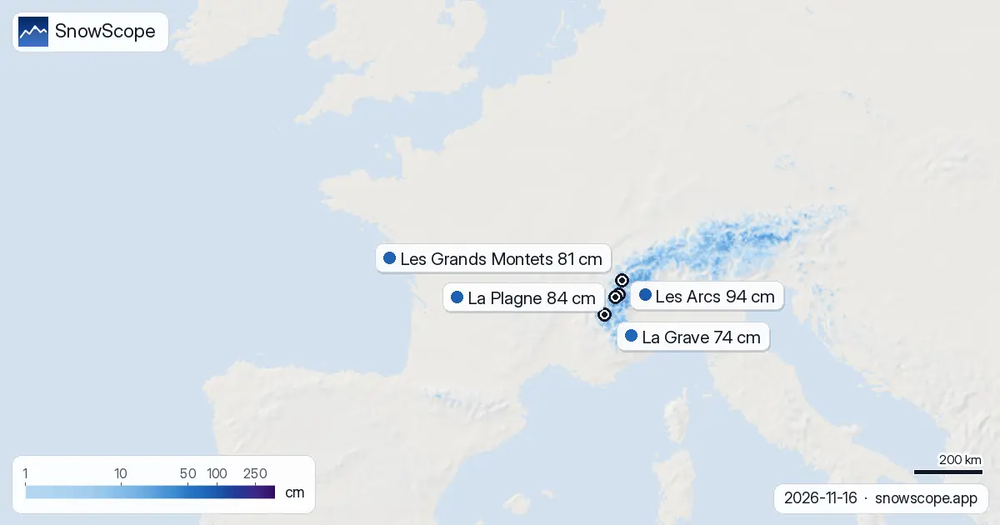

Enneigement en France, 16 novembre 2026 : hauteurs, neige fraîche et jours à venir
9 450 km² de terrain enneigé en France ce lundi, 570 km² de moins qu'hier. Autrement dit, 11 % du relief cartographié est blanc.
Consultez les prévisions neige en temps réel pour Les Arcs sur l'application SnowScopeHauteurs de neige, alertes poudreuse et carte 3D, gratuitement.
Couverture neigeuse aujourd'hui
Les 8 000 km² de la semaine dernière ont augmenté de 1 450 km². La limite de l'enneigement se situe vers 1 900 m.
| Station | Hauteur de neige | Neige fraîche, 72 h | Attendu, jours suivants | Sommet |
|---|---|---|---|---|
| Les Arcs | 94 cm | 29 cm | 87 cm | 3 205 m |
| La Plagne | 84 cm | 26 cm | 79 cm | 3 058 m |
| Les Grands Montets | 81 cm | 29 cm | 89 cm | 2 768 m |
| La Grave | 74 cm | 41 cm | 90 cm | 3 543 m |
| La Rosière | 73 cm | 25 cm | 86 cm | 2 799 m |

Neige fraîche sur trois jours
Les cumuls sur trois jours culminent à 29 cm, autour de le massif du Mont-Blanc, les Alpes du Sud et les Alpes du Nord.
En une journée, jusqu'à 12 cm se sont ajoutés.
Au moins 5 cm sont tombés sur quelque 8 980 km².
Hauteur de neige selon l'altitude
Plus on monte, plus la neige est épaisse : 1 000-1 500 m : en moyenne moins de 1 cm (1 % du sol blanc); 1 500-2 000 m : en moyenne 1 cm (33 % du sol blanc); 2 000-2 500 m : en moyenne 6 cm (72 % du sol blanc); au-dessus de 2 500 m : en moyenne 25 cm (94 % blanc).
Conditions de ski
La neige fraîche sur la sous-couche promet des virages souples en haut, tandis que le bas reste irrégulier.
Surveillez les prévisions : la neige à venir peut vite changer la donne.
La sélection pour le week-end
La neige la plus épaisse des stations du pays est à Les Arcs : 94 cm.
Juste derrière : La Plagne (84 cm), Les Grands Montets (81 cm), La Grave (74 cm) et La Rosière (73 cm).
Les Arcs a reçu 29 cm en trois jours et pourrait gagner 87 cm d'ici jeudi 19 novembre.
La Plagne a reçu 26 cm en trois jours et pourrait gagner 79 cm d'ici jeudi 19 novembre.
On compte 103 stations blanches sur 224 en France aujourd'hui.
Ce qui arrive
De la neige est prévue : jusqu'à 65 cm d'ici trois jours, jusqu'à 105 cm en sept jours.
Le vendredi 20 novembre se détache, avec jusqu'à 33 cm en une journée.
La deuxième semaine ajoute jusqu'à 44 cm là où il neige le plus.
Conseils aux skieurs
- Les routes des stations d'altitude peuvent exiger pneus hiver ou chaînes.
- Au-dessus de la forêt, la neige peut être ventée : attention aux crêtes.
- Vérifiez l'ouverture des remontées avant de partir.
À propos de ces chiffres
Les hauteurs de neige des stations sont la neige la plus épaisse sur le haut du domaine, d'après le modèle de neige SnowScope (environ 1 km, calcul du 16 novembre) ; ce sont des estimations pour une zone, pas une mesure en un point. Les valeurs des stations de mesure sont mesurées à la date indiquée. Les prévisions peuvent changer. Consultez toujours le bulletin d'avalanche officiel avant le hors-piste.
Citer ce bulletin
Pour la recherche, l'enseignement ou la presse : chiffres et graphiques réutilisables librement sous CC BY 4.0 avec cette citation.
SnowScope (2026), Enneigement en France, 16 novembre 2026 : hauteurs, neige fraîche et jours à venir, https://snowscope.app/blog/fr/2026/11/france-snow-report-16-november-2026.html, consulté le 2026-11-16
SnowScope (Atlas Labs). (2026, November 16). Enneigement en France, 16 novembre 2026 : hauteurs, neige fraîche et jours à venir. SnowScope snow reports. https://snowscope.app/blog/fr/2026/11/france-snow-report-16-november-2026.html
BibTeX
@misc{snowscope2026francesnowreport16novemb,
author = {{SnowScope (Atlas Labs)}},
title = {Enneigement en France, 16 novembre 2026 : hauteurs, neige fraîche et jours à venir},
year = {2026},
month = nov,
howpublished = {\url{https://snowscope.app/blog/fr/2026/11/france-snow-report-16-november-2026.html}},
note = {Published 2026-11-16 20:42 UTC; accessed 2026-11-16}
}· CC BY 4.0 · Méthodes, données et outils →
Les Arcs : neige et température selon l'altitude, cet hiver vs l'hiver dernier (outils) →
Suivre Les Arcs
Gratuit : un message quand la neige arrive, et la météo chaque matin.